Publicações
As publicações do NCOR-BR incluem desde materiais introdutórios até mais avançados, disponíveis para download. Você não tem custo e nem obrigações, pedimos apenas citar a referência ao usar o material.
Tipos de publicações do NCOR-BR
- Cadernos
- E-books
- Indicações de livros
Os CADERNOS DO NCOR-BR são materiais acessíveis sobre ontologias, em níveis mais preliminar, disponíveis para download sem custo. Pedimos apenas citar a referência ao usar o material.
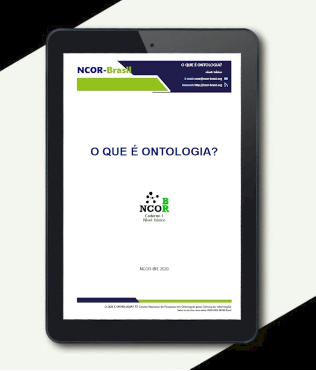
Caderno 1
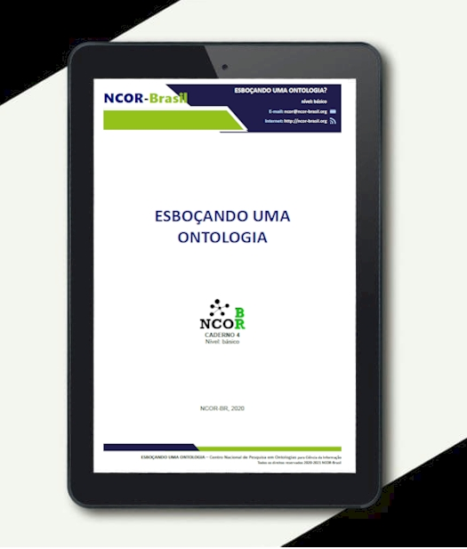
Caderno 4
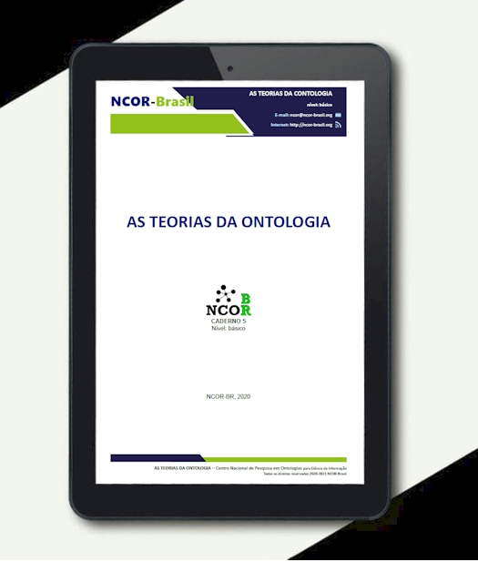
Caderno 5
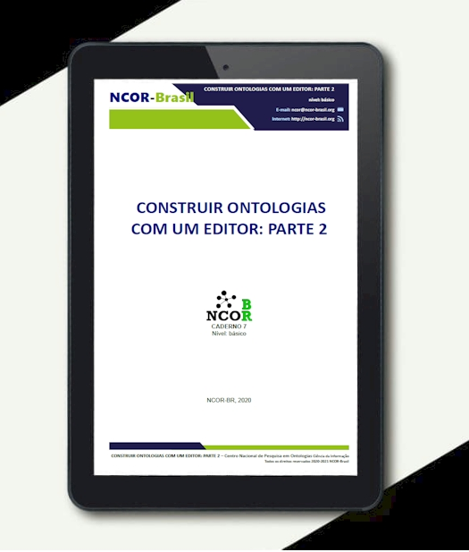
Caderno 7
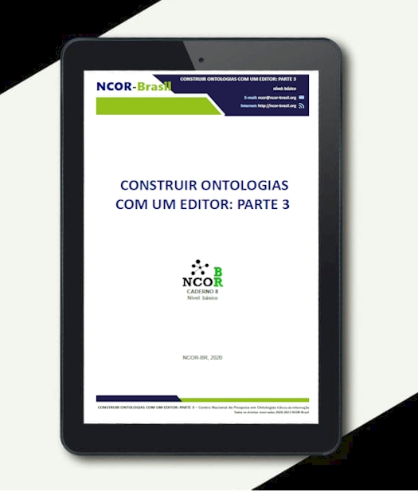
Caderno 8
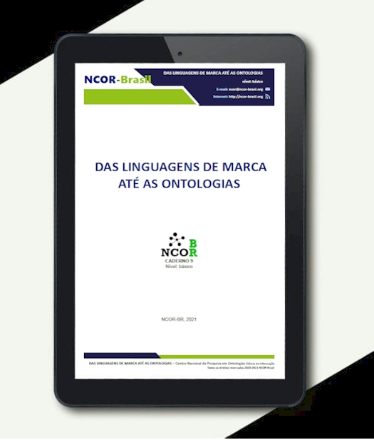
Caderno 9
REPRESENTAÇÃO DO CONHECIMENTO, ONTOLOGIAS E LINGUAGEM: Pesquisa aplicada em Ciência da Informação.
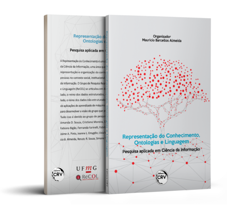
Você pode adquirir a obra acima na Amazon ou Editora CVR.
O Grupo de Pesquisa Representação do Conhecimento, Ontologias e Linguagem (ReCOL) nasceu há mais de 15 anos e se articulou em dois eixos – ontologias e data-science – que contemplam o interesse crescente nesses temas pela ciência, campos profissionais e sociedade em geral.
Conheça também os e-books e os cadernos do NCOR.
ONTOLOGIA EM CIÊNCIA DA INFORMAÇÃO: Teoria e Método. Coleção Representação do Conhecimento em Ciência da Informação, Volume 1 (2020).
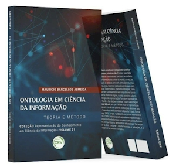
Você pode adquirir a obra acima na Amazon ou Editora CVR.
Antes você pode conhecer o volume 1 lendo o CAPITULO 1 AQUI
Para entender a ontologia é preciso entender sua dualidade: enquanto a ontologia como disciplina é inescapável, a ontologia como artefato transporta as técnicas da Organização do Conhecimento para o mundo digital, ensejando oportunidades para o campo. O presente volume aborda as principais teorias da ontologia em uma obra de Ciência da Informação e para Ciência da Informação, voltada para profissionais de informação na acepção ampla. Ao conectar teorias diversas para alcançar a Ontologia Aplicada, o volume pode ser referência para ensino e pesquisa ao introduzir uma variedade de temas para consulta e posterior aprofundamento.
ONTOLOGIA EM CIÊNCIA DA INFORMAÇÃO: Teoria e Aplicações. Coleção Representação do Conhecimento em Ciência da Informação, Volume 2 (2021).
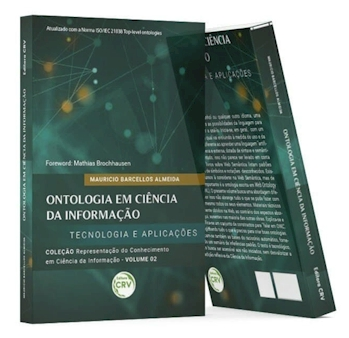
Você pode adquirir a obra acima na Amazon ou Editora CVR.
Antes você pode conhecer o volume 2 lendo o CAPITULO 2 AQUI
Acesse materiais suplementares deste volume.
Ao aprender inglês, espanhol ou qualquer outro idioma, uma pessoa não estuda todas as possibilidades da linguagem para apenas depois começar a usá-la. Inicia-se, em geral, com um “vocabulário básico”, o qual vai evoluindo a medida do uso e da interação. Não é tão diferente quando ao aprender uma linguagem “artificial”, também complexa e extensa, dotada de sintaxe e semântica específicas. Contudo, isso não parece ser levado em conta pela maioria dos livros sobre Web Semântica quando praticamente listam padrões técnicos repletos de símbolos desconhecidos. Existem muitos recursos à considerar na Web Semântica, mas o mais importante é a ontologia escrita em Web Ontology Language (OWL). O presente volume busca uma abordagem diferenciada e, por isso, não abrange tudo o que se pode fazer com OWL, nem mesmo todos os seus elementos. Materiais técnicos são facilmente obtidos na Web, ao contrário dos aspectos abordados aqui, ausentes na maioria das outras obras. Explica-se e exemplifica-se um conjunto de construtos – para representar entidades, relações e valores ̶ que engloba tudo o que é preciso para criar ontologias em OWL. Explicam-se também as bases do raciocínio automático, fornecendo um sumário de inferências padrão. O texto busca ser acessível aos não iniciados, sem desvalorizar a tradição reflexiva da CI.
ONTOLOGIA EM CIÊNCIA DA INFORMAÇÃO: Curso completo com teorias e exercícios. Coleção Representação do Conhecimento em Ciência da Informação, Volume Suplementar (2022).
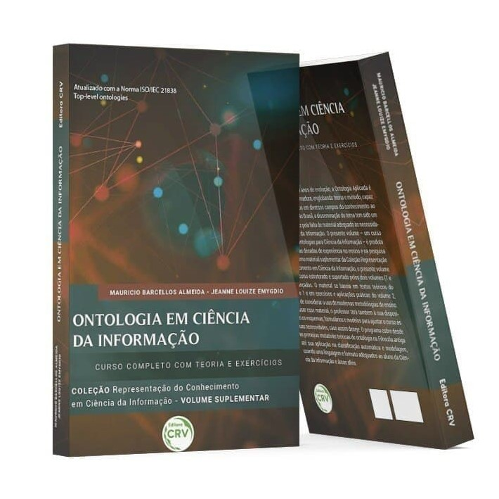
Você pode adquirir a obra acima na Amazon ou Editora CVR.
Antes você pode conhecer o volume suplementar lendo o CAPITULO 1 AQUI
Acesse materiais suplementares deste volume.
Ontologia é um termo que envolve pelo menos duas concepções de interesse para a Ciência da Informação: noções filosóficas que envolvem as teorias da classificação e a construção de um rigoroso artefato representacional. A coleção da qual esse volume faz parte, foi concebida na crença de que essas concepções são capazes de conectar teorias e técnicas consagradas na Ciência da Informação com a evolução tecnológica do século XXI. O presente material é um volume suplementar: traz organizado um curso completo de ontologias para a Ciência da Informação, de forma a facilitar o trabalho dos professores que querem ensinar o assunto na graduação e mesmo na pós-graduação.
ONTOLOGIA EM CIÊNCIA DA INFORMAÇÃO: Estudos Avançados. Coleção Representação do Conhecimento em Ciência da Informação, Volume 3 (2023).
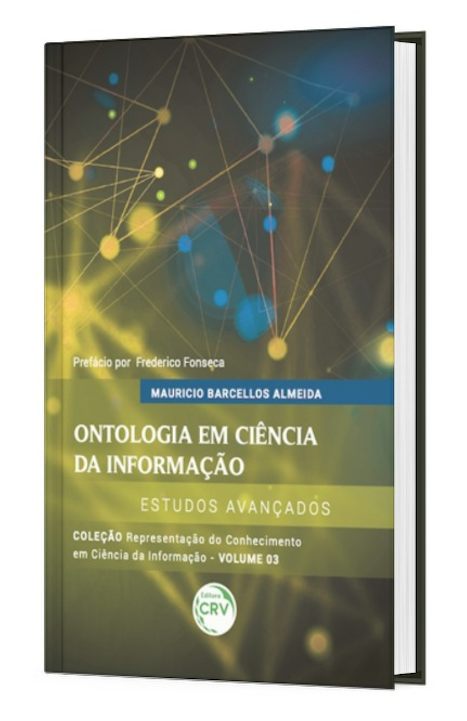
Você pode adquirir a obra acima na Amazon ou Editora CVR.
Antes você pode conhecer o volume 3 lendo o CAPITULO 1 AQUI
Vivemos em um mundo repleto de entidades criadas por outras pessoas: das microscópicas como um vírus, até os macroscópicas como um parafuso; das instantâneas como um documento, àquelas que dispendem anos como uma catedral; daquelas que exigem pouca habilidade como um martelo, às que exigem muita habilidade como um violino; daquelas que custam pouco como um alfinete, àqueles que exigem de milhões como um foguete para ir a Marte. Mas o que exatamente são essas coisas? Como são criadas e como mantém sua existência em meio a nós? Todas essas entidades, e muitas outras criadas por pessoas, são chamados genericamente de artefatos. O presente volume enfatiza esse complexo tema a partir das teorias da Ontologia Aplicada. Partindo da realidade, avança-se na intencionalidade e agência, as quais explicam a passagem do mundo natural para o artefatual. Em particular, tomam-se tipos distintos de artefatos – corporações e obras de arte – que tem em comum o fato de pertencerem a domínios do conhecimento de interesse da Ciência da Informação. Aos estudos teóricos, seguem-se esquemas que permitem iniciar a construção de ontologias computacionais, bem como apoio teórico-prático à formalização. Assim, prepara-se o profissional da informação para fundamentar e criar estruturas capazes de processamento inteligente por computadores no contexto da Web Semântica.